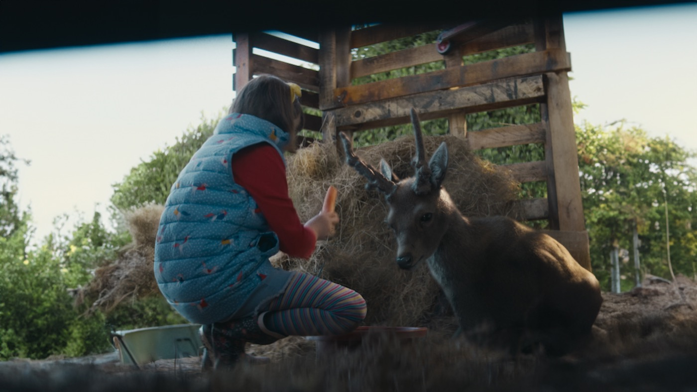

SuperValu — Share The Magic
All selected work
SuperValuShare The MagicA Twitter (now X) Global Success Story, 6 million impressions, and a deer the nation couldn't stop talking about.
SuperValu's Christmas ad told the story of Deermuid, an injured deer nursed back to health by a young girl called Aoife. While it ran on TV and across paid social, I was building the social and digital world around it: keeping Deermuid's story alive in real time, across every platform, for weeks.
I led community management and social strategy for the campaign. That meant giving Deermuid an actual name (a reveal moment on its own), setting up a Lapland phoneline where people could call in “sightings” of him to Santa, and building out a library of deer-related GIFs and puns for reactive, in-the-moment replies.
Festive television in Ireland has its own big shared moments, so I ran live tweeting through them, joining the conversation across the country as it happened rather than posting on a schedule. On the paid side, we tested formats most brands weren't touching yet: Trend Takeovers, Timeline Takeovers, keyword targeting around Christmas conversation, and follower lookalike and engager targeting to find more people already primed to care.
- Role
- Community Management & Social Strategy
- Brand
- SuperValu
- Category
- Retail / FMCG
- Location
- Ireland (nationwide)
- Year
- 2021–2022
It worked past the point I expected it to. The campaign pulled in 6 million impressions and 3 million video views on Twitter, with 59,000 quality engagements, and #WeBelieve trended more than once. On TikTok, a separate content push hit 2.4 million views with over 90% positive commentary, which for a supermarket Christmas campaign is not a given. Twitter's own business team noticed. They selected the campaign as one of their Global Success Stories worldwide, calling out the mix of creative formats and the live, reactive tone specifically as best-in-class. It also picked up Best in Storytelling at the Spiders, multiple ICADs, and a shortlist for a Digital Media Award.
The story didn't stop there, either. The following Christmas season, Deermuid came back, this time as an AR filter on Instagram and TikTok, letting people bring him into their own gardens and sitting rooms rather than just watching him on a screen. I kept the same instinct running into year two: don't just repeat the ad, give people a new way back into the story.
The award winning ad started Deermuid's story. I spent months making sure a nation never stopped believing it.


Recognition
- Twitter (now X) Global Success Story
- Best in Storytelling: The Spiders
- Multiple ICAD awards
- Finalist: Digital Media Awards